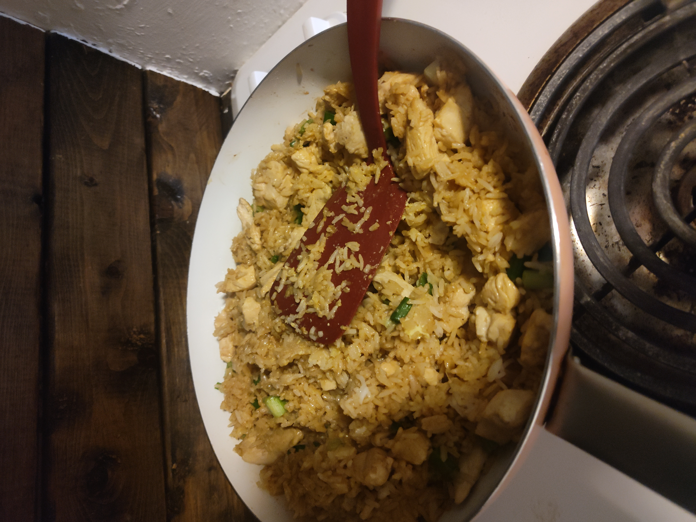
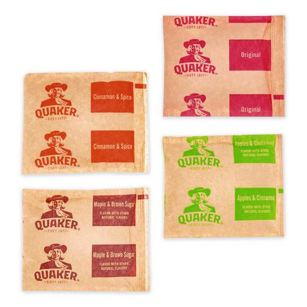

I do like making food!

Recently, I've gotten a hang on preparing dishes here and there from what I can muster from my house.
This fried rice was rather simple: Fry up the meat, then add rice, vegetables, and seasoning.
It was a little impromptu, and a proper recipe cannot be provided. (Oddly, this is how my mother is with her
dishes. Instead of giving me a recipe, she just provides a guideline, before telling you to "look it up" if
you persist)
There is one dish I could introduce, perfect for the sterotypical college lunch on a budget!
How to make: Dry Oatmeal

You will need:
- Peanut Butter, or any nut butter you prefer.
- Oatmeal
- Milk or Water
- Necessary non-food utilities (spoon, bowl, microwave,etc.)
Instructions:
- Pour the oatmeal into a bowl
- Pour the milk/water into the bowl. Pour between enough to wet the oats and enough to just
submerge
the oats. If something is floating, you put too much.
- Mix in the peanut butter(roughly a spoonful)
- Place the mixture in the microwave for 1 minute.
- Let cool or place in container and cool for later use. Don't leave in a cheap lunch bag
overnight.